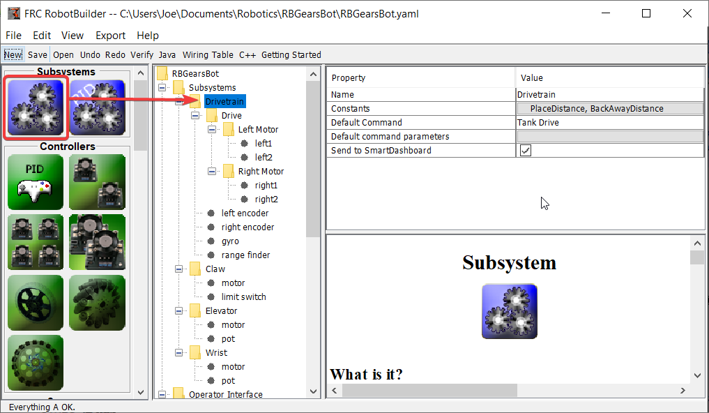
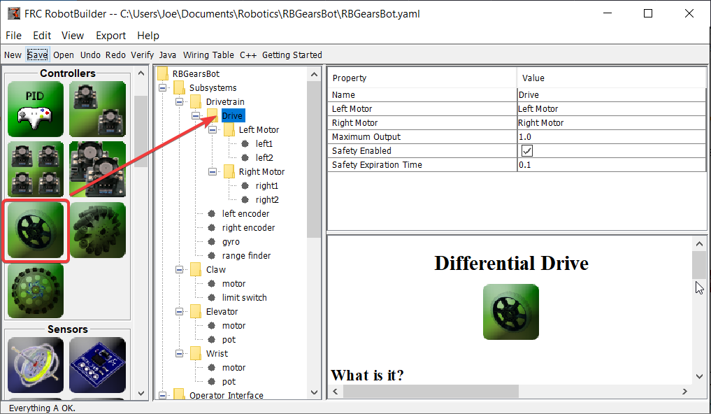
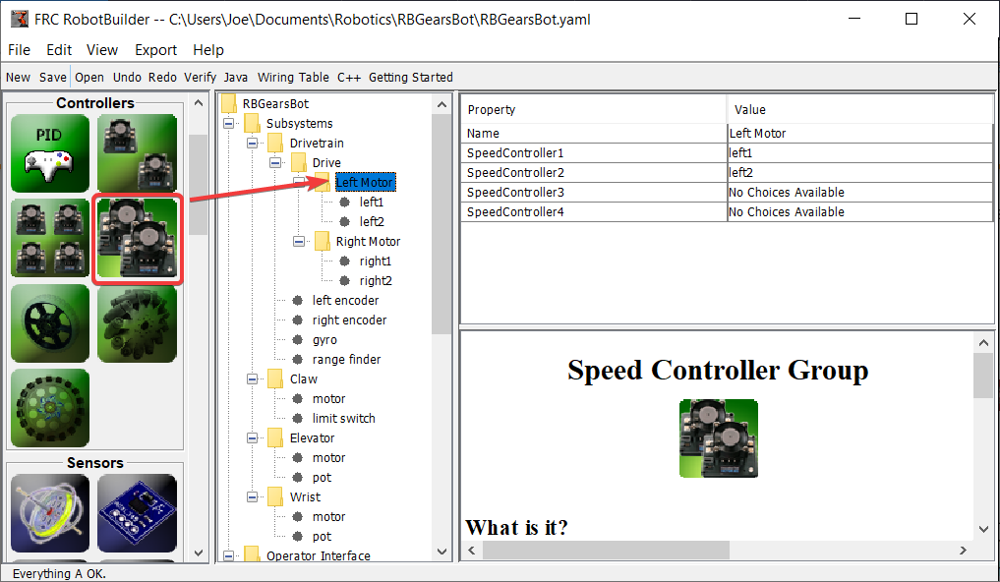
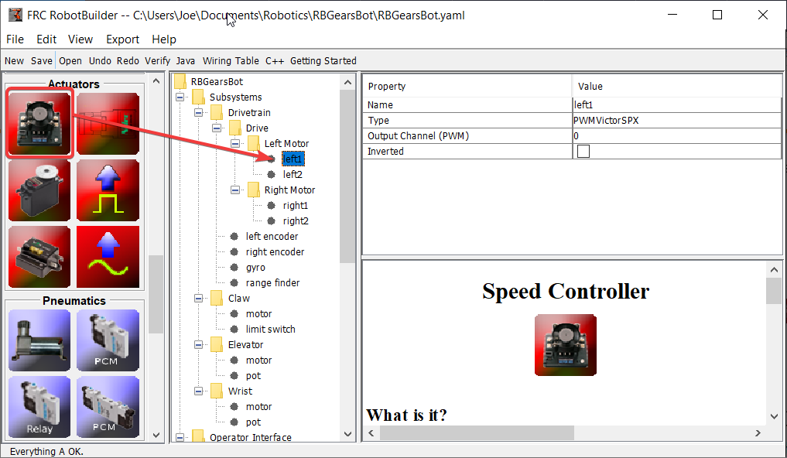
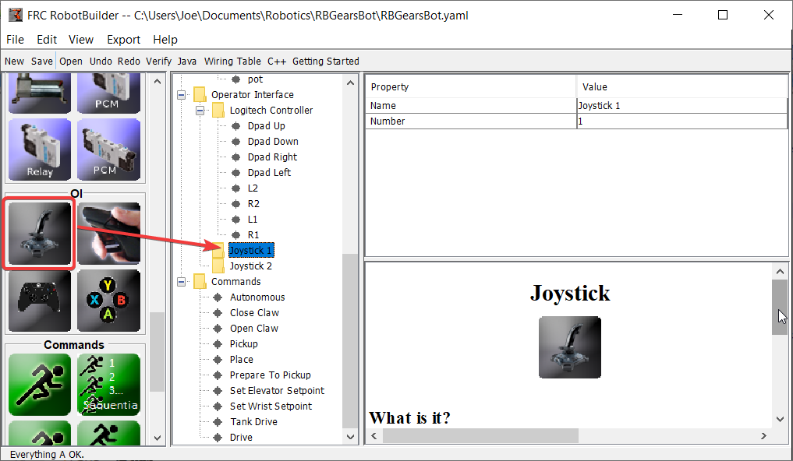
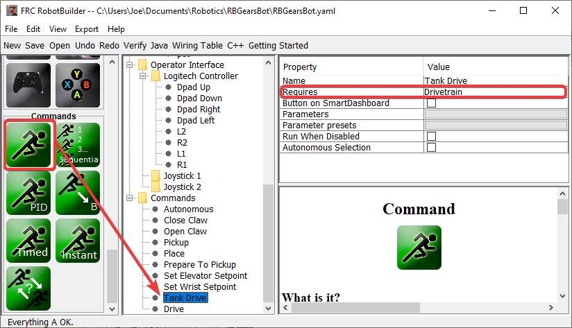
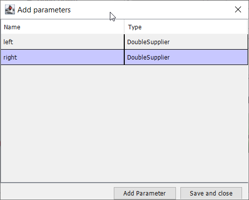
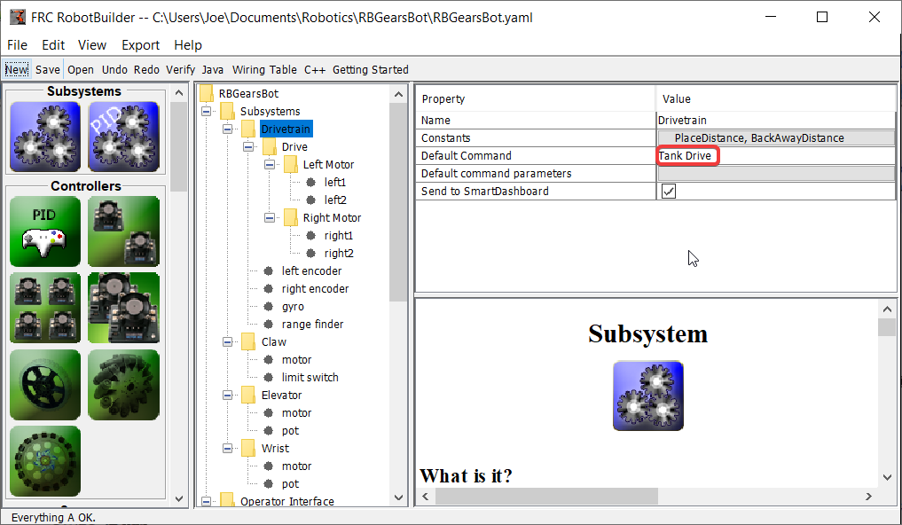
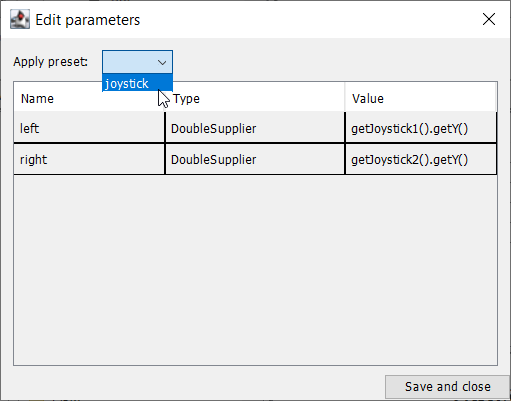

Driving the Robot with Tank Drive and Joysticks
A common use case is to have a joystick that should drive some actuators that are part of a subsystem. The problem is that the joystick is created in the RobotContainer class and the motors to be controlled are in the subsystem. The idea is to create a command that, when scheduled, reads input from the joystick and calls a method that is created on the subsystem that drives the motors.
In this example a drive base subsystem is shown that is operated in tank drive using a pair of joysticks.
Create a Drive Train Subsystem
Create a subsystem called Drive Train. Its responsibility will be to handle the driving for the robot base.
Inside the Drive Train create a Differential Drive object for a two motor drive. There is a left motor and right motor as part of the Differential Drive class.
Since we want to use more then two motors to drive the robot, inside the Differential Drive, create two Motor Controller Groups. These will group multiple motor controllers so they can be used with Differential Drive.
Finally, create two Motor Controllers in each Motor Controller Group.
Add the Joysticks to the Operator Interface
Add two joysticks to the Operator Interface, one is the left stick and the other is the right stick. The y-axis on the two joysticks are used to drive the robots left and right sides.
Note
Be sure to export your program to C++ or Java before continuing to the next step.
Create a Method to Write the Motors on the Subsystem
11// ROBOTBUILDER TYPE: Subsystem.
12
13package frc.robot.subsystems;
14
15
16import frc.robot.commands.*;
17import edu.wpi.first.wpilibj.livewindow.LiveWindow;
18import edu.wpi.first.wpilibj2.command.SubsystemBase;
19
20// BEGIN AUTOGENERATED CODE, SOURCE=ROBOTBUILDER ID=IMPORTS
21import edu.wpi.first.wpilibj.AnalogGyro;
22import edu.wpi.first.wpilibj.AnalogInput;
23import edu.wpi.first.wpilibj.CounterBase.EncodingType;
24import edu.wpi.first.wpilibj.Encoder;
25import edu.wpi.first.wpilibj.drive.DifferentialDrive;
26import edu.wpi.first.wpilibj.motorcontrol.MotorController;
27import edu.wpi.first.wpilibj.motorcontrol.MotorControllerGroup;
28import edu.wpi.first.wpilibj.motorcontrol.PWMVictorSPX;
29
30 // END AUTOGENERATED CODE, SOURCE=ROBOTBUILDER ID=IMPORTS
31
32
33/**
34 *
35 */
36public class Drivetrain extends SubsystemBase {
37 // BEGIN AUTOGENERATED CODE, SOURCE=ROBOTBUILDER ID=CONSTANTS
38public static final double PlaceDistance = 0.1;
39public static final double BackAwayDistance = 0.6;
40
41 // END AUTOGENERATED CODE, SOURCE=ROBOTBUILDER ID=CONSTANTS
42
43 // BEGIN AUTOGENERATED CODE, SOURCE=ROBOTBUILDER ID=DECLARATIONS
44private PWMVictorSPX left1;
45private PWMVictorSPX left2;
46private MotorControllerGroup leftMotor;
47private PWMVictorSPX right1;
48private PWMVictorSPX right2;
49private MotorControllerGroup rightMotor;
50private DifferentialDrive drive;
51private Encoder leftencoder;
52private Encoder rightencoder;
53private AnalogGyro gyro;
54private AnalogInput rangefinder;
55
56 // END AUTOGENERATED CODE, SOURCE=ROBOTBUILDER ID=DECLARATIONS
57
58 /**
59 *
60 */
61 public Drivetrain() {
62 // BEGIN AUTOGENERATED CODE, SOURCE=ROBOTBUILDER ID=CONSTRUCTORS
63left1 = new PWMVictorSPX(0);
64 addChild("left1",left1);
65 left1.setInverted(false);
66
67left2 = new PWMVictorSPX(1);
68 addChild("left2",left2);
69 left2.setInverted(false);
70
71leftMotor = new MotorControllerGroup(left1, left2 );
72 addChild("Left Motor",leftMotor);
73
74
75right1 = new PWMVictorSPX(5);
76 addChild("right1",right1);
77 right1.setInverted(false);
78
79right2 = new PWMVictorSPX(6);
80 addChild("right2",right2);
81 right2.setInverted(false);
82
83rightMotor = new MotorControllerGroup(right1, right2 );
84 addChild("Right Motor",rightMotor);
85
86
87drive = new DifferentialDrive(leftMotor, rightMotor);
88 addChild("Drive",drive);
89 drive.setSafetyEnabled(true);
90drive.setExpiration(0.1);
91drive.setMaxOutput(1.0);
92
93
94leftencoder = new Encoder(0, 1, false, EncodingType.k4X);
95 addChild("left encoder",leftencoder);
96 leftencoder.setDistancePerPulse(1.0);
97
98rightencoder = new Encoder(2, 3, false, EncodingType.k4X);
99 addChild("right encoder",rightencoder);
100 rightencoder.setDistancePerPulse(1.0);
101
102gyro = new AnalogGyro(0);
103 addChild("gyro",gyro);
104 gyro.setSensitivity(0.007);
105
106rangefinder = new AnalogInput(1);
107 addChild("range finder", rangefinder);
108
109
110
111 // END AUTOGENERATED CODE, SOURCE=ROBOTBUILDER ID=CONSTRUCTORS
112 }
113
114 @Override
115 public void periodic() {
116 // This method will be called once per scheduler run
117
118 }
119
120 @Override
121 public void simulationPeriodic() {
122 // This method will be called once per scheduler run when in simulation
123
124 }
125
126 // Put methods for controlling this subsystem
127 // here. Call these from Commands.
128
129 public void drive(double left, double right) {
130 drive.tankDrive(left, right);
131 }
132}
11// ROBOTBUILDER TYPE: Subsystem.
12#pragma once
13
14// BEGIN AUTOGENERATED CODE, SOURCE=ROBOTBUILDER ID=INCLUDES
15#include <frc2/command/SubsystemBase.h>
16#include <frc/AnalogGyro.h>
17#include <frc/AnalogInput.h>
18#include <frc/Encoder.h>
19#include <frc/drive/DifferentialDrive.h>
20#include <frc/motorcontrol/MotorControllerGroup.h>
21#include <frc/motorcontrol/PWMVictorSPX.h>
22
23// END AUTOGENERATED CODE, SOURCE=ROBOTBUILDER ID=INCLUDES
24
25/**
26 *
27 *
28 * @author ExampleAuthor
29 */
30class Drivetrain: public frc2::SubsystemBase {
31private:
32 // It's desirable that everything possible is private except
33 // for methods that implement subsystem capabilities
34 // BEGIN AUTOGENERATED CODE, SOURCE=ROBOTBUILDER ID=DECLARATIONS
35frc::AnalogInput m_rangefinder{1};
36frc::AnalogGyro m_gyro{0};
37frc::Encoder m_rightencoder{2, 3, false, frc::Encoder::k4X};
38frc::Encoder m_leftencoder{0, 1, false, frc::Encoder::k4X};
39frc::DifferentialDrive m_drive{m_leftMotor, m_rightMotor};
40frc::MotorControllerGroup m_rightMotor{m_right1, m_right2 };
41frc::PWMVictorSPX m_right2{6};
42frc::PWMVictorSPX m_right1{5};
43frc::MotorControllerGroup m_leftMotor{m_left1, m_left2 };
44frc::PWMVictorSPX m_left2{1};
45frc::PWMVictorSPX m_left1{0};
46
47 // END AUTOGENERATED CODE, SOURCE=ROBOTBUILDER ID=DECLARATIONS
48public:
49Drivetrain();
50
51 void Periodic() override;
52 void SimulationPeriodic() override;
53 void Drive(double left, double right);
54 // BEGIN AUTOGENERATED CODE, SOURCE=ROBOTBUILDER ID=CMDPIDGETTERS
55
56 // END AUTOGENERATED CODE, SOURCE=ROBOTBUILDER ID=CMDPIDGETTERS
57 // BEGIN AUTOGENERATED CODE, SOURCE=ROBOTBUILDER ID=CONSTANTS
58static constexpr const double PlaceDistance = 0.1;
59static constexpr const double BackAwayDistance = 0.6;
60
61 // END AUTOGENERATED CODE, SOURCE=ROBOTBUILDER ID=CONSTANTS
62
63
64};
11// ROBOTBUILDER TYPE: Subsystem.
12
13// BEGIN AUTOGENERATED CODE, SOURCE=ROBOTBUILDER ID=INCLUDES
14#include "subsystems/Drivetrain.h"
15#include <frc/smartdashboard/SmartDashboard.h>
16
17// END AUTOGENERATED CODE, SOURCE=ROBOTBUILDER ID=INCLUDES
18
19Drivetrain::Drivetrain(){
20 SetName("Drivetrain");
21 // BEGIN AUTOGENERATED CODE, SOURCE=ROBOTBUILDER ID=DECLARATIONS
22 SetSubsystem("Drivetrain");
23
24 AddChild("range finder", &m_rangefinder);
25
26
27 AddChild("gyro", &m_gyro);
28 m_gyro.SetSensitivity(0.007);
29
30 AddChild("right encoder", &m_rightencoder);
31 m_rightencoder.SetDistancePerPulse(1.0);
32
33 AddChild("left encoder", &m_leftencoder);
34 m_leftencoder.SetDistancePerPulse(1.0);
35
36 AddChild("Drive", &m_drive);
37 m_drive.SetSafetyEnabled(true);
38m_drive.SetExpiration(0.1_s);
39m_drive.SetMaxOutput(1.0);
40
41
42 AddChild("Right Motor", &m_rightMotor);
43
44
45 AddChild("right2", &m_right2);
46 m_right2.SetInverted(false);
47
48 AddChild("right1", &m_right1);
49 m_right1.SetInverted(false);
50
51 AddChild("Left Motor", &m_leftMotor);
52
53
54 AddChild("left2", &m_left2);
55 m_left2.SetInverted(false);
56
57 AddChild("left1", &m_left1);
58 m_left1.SetInverted(false);
59
60 // END AUTOGENERATED CODE, SOURCE=ROBOTBUILDER ID=DECLARATIONS
61}
62
63void Drivetrain::Periodic() {
64 // Put code here to be run every loop
65
66}
67
68void Drivetrain::SimulationPeriodic() {
69 // This method will be called once per scheduler run when in simulation
70
71}
72
73// BEGIN AUTOGENERATED CODE, SOURCE=ROBOTBUILDER ID=CMDPIDGETTERS
74
75// END AUTOGENERATED CODE, SOURCE=ROBOTBUILDER ID=CMDPIDGETTERS
76
77
78// Put methods for controlling this subsystem
79// here. Call these from Commands.
80
81 void Drivetrain::Drive(double left, double right) {
82 m_drive.TankDrive(left, right);
83 }
Create a method that takes the joystick inputs, in this case the left and right driver joystick. The values are passed to the DifferentialDrive object that in turn does tank steering using the joystick values. Also create a method called stop() that stops the robot from driving, this might come in handy later.
Note
Some RobotBuilder output has been removed for this example for clarity
Read Joystick Values and Call the Subsystem Methods
Create a command, in this case called Tank Drive. Its purpose will be to read the joystick values and send them to the Drive Base subsystem. Notice that this command Requires the Drive Train subsystem. This will cause it to stop running whenever anything else tries to use the Drive Train.
Create two parameters (DoubleSupplier for Java or std::function<double()> for C++) for the left and right speeds.
Create a parameter preset to retrive joystick values. Java: For the left parameter enter () -> getJoystick1().getY() and for right enter () -> getJoystick2().getY(). C++: For the left parameter enter [this] {return getJoystick1()->GetY();} and for the right enter [this] {return getJoystick2()->GetY();}
Note
Be sure to export your program to C++ or Java before continuing to the next step.
Add the Code to do the Driving
11// ROBOTBUILDER TYPE: Command.
12
13package frc.robot.commands;
14import edu.wpi.first.wpilibj.Joystick;
15import edu.wpi.first.wpilibj2.command.CommandBase;
16import frc.robot.RobotContainer;
17// BEGIN AUTOGENERATED CODE, SOURCE=ROBOTBUILDER ID=IMPORTS
18import frc.robot.subsystems.Drivetrain;
19
20 // END AUTOGENERATED CODE, SOURCE=ROBOTBUILDER ID=IMPORTS
21
22/**
23 *
24 */
25public class TankDrive extends CommandBase {
26
27 // BEGIN AUTOGENERATED CODE, SOURCE=ROBOTBUILDER ID=VARIABLE_DECLARATIONS
28 private final Drivetrain m_drivetrain;
29
30 // END AUTOGENERATED CODE, SOURCE=ROBOTBUILDER ID=VARIABLE_DECLARATIONS
31
32 // BEGIN AUTOGENERATED CODE, SOURCE=ROBOTBUILDER ID=CONSTRUCTORS
33
34
35 public TankDrive(Drivetrain subsystem) {
36
37
38 // END AUTOGENERATED CODE, SOURCE=ROBOTBUILDER ID=CONSTRUCTORS
39 // BEGIN AUTOGENERATED CODE, SOURCE=ROBOTBUILDER ID=VARIABLE_SETTING
40
41 // END AUTOGENERATED CODE, SOURCE=ROBOTBUILDER ID=VARIABLE_SETTING
42 // BEGIN AUTOGENERATED CODE, SOURCE=ROBOTBUILDER ID=REQUIRES
43
44 m_drivetrain = subsystem;
45 addRequirements(m_drivetrain);
46
47 // END AUTOGENERATED CODE, SOURCE=ROBOTBUILDER ID=REQUIRES
48 }
49
50 // Called when the command is initially scheduled.
51 @Override
52 public void initialize() {
53 }
54
55 // Called every time the scheduler runs while the command is scheduled.
56 @Override
57 public void execute() {
58 m_drivetrain.drive(m_left.getAsDouble(), m_right.getAsDouble());
59 }
60
61 // Called once the command ends or is interrupted.
62 @Override
63 public void end(boolean interrupted) {
64 m_drivetrain.drive(0.0, 0.0);
65 }
66
67 // Returns true when the command should end.
68 @Override
69 public boolean isFinished() {
70 return false;
71 }
72
73 @Override
74 public boolean runsWhenDisabled() {
75 // BEGIN AUTOGENERATED CODE, SOURCE=ROBOTBUILDER ID=DISABLED
76 return false;
77
78 // END AUTOGENERATED CODE, SOURCE=ROBOTBUILDER ID=DISABLED
79 }
80}
11// ROBOTBUILDER TYPE: Command.
12
13#pragma once
14
15 // BEGIN AUTOGENERATED CODE, SOURCE=ROBOTBUILDER ID=INCLUDES
16
17#include <frc2/command/CommandHelper.h>
18#include <frc2/command/CommandBase.h>
19
20#include "subsystems/Drivetrain.h"
21
22 // END AUTOGENERATED CODE, SOURCE=ROBOTBUILDER ID=INCLUDES
23#include "RobotContainer.h"
24#include <frc/Joystick.h>
25
26/**
27 *
28 *
29 * @author ExampleAuthor
30 */
31class TankDrive: public frc2::CommandHelper<frc2::CommandBase, TankDrive> {
32public:
33 // BEGIN AUTOGENERATED CODE, SOURCE=ROBOTBUILDER ID=CONSTRUCTOR
34 explicit TankDrive(Drivetrain* m_drivetrain);
35
36 // END AUTOGENERATED CODE, SOURCE=ROBOTBUILDER ID=CONSTRUCTOR
37
38void Initialize() override;
39void Execute() override;
40bool IsFinished() override;
41void End(bool interrupted) override;
42bool RunsWhenDisabled() const override;
43
44
45private:
46 // BEGIN AUTOGENERATED CODE, SOURCE=ROBOTBUILDER ID=VARIABLES
47
48
49Drivetrain* m_drivetrain;
50frc::Joystick* m_leftJoystick;
51frc::Joystick* m_rightJoystick;
52
53 // END AUTOGENERATED CODE, SOURCE=ROBOTBUILDER ID=VARIABLES
54};
11// ROBOTBUILDER TYPE: Command.
12
13// BEGIN AUTOGENERATED CODE, SOURCE=ROBOTBUILDER ID=CONSTRUCTOR
14
15#include "commands/TankDrive.h"
16
17TankDrive::TankDrive(Drivetrain* m_drivetrain)
18:m_drivetrain(m_drivetrain){
19
20 // Use AddRequirements() here to declare subsystem dependencies
21 // eg. AddRequirements(m_Subsystem);
22 SetName("TankDrive");
23 AddRequirements({m_drivetrain});
24
25// END AUTOGENERATED CODE, SOURCE=ROBOTBUILDER ID=CONSTRUCTOR
26}
27
28// Called just before this Command runs the first time
29void TankDrive::Initialize() {
30
31}
32
33// Called repeatedly when this Command is scheduled to run
34void TankDrive::Execute() {
35 m_drivetrain->Drive(m_left(),m_right());
36}
37
38// Make this return true when this Command no longer needs to run execute()
39bool TankDrive::IsFinished() {
40 return false;
41}
42
43// Called once after isFinished returns true
44void TankDrive::End(bool interrupted) {
45 m_drivetrain->Drive(0,0);
46}
47
48bool TankDrive::RunsWhenDisabled() const {
49 // BEGIN AUTOGENERATED CODE, SOURCE=ROBOTBUILDER ID=DISABLED
50 return false;
51
52 // END AUTOGENERATED CODE, SOURCE=ROBOTBUILDER ID=DISABLED
53}
Add code to the execute method to do the actual driving. All that is needed is pass the for the left and right parameters to the Drive Train subsystem. The subsystem just uses them for the tank steering method on its DifferentialDrive object. And we get tank steering.
We also filled in the end() method so that when this command is interrupted or stopped, the motors will be stopped as a safety precaution.
Make Default Command
The last step is to make the Tank Drive command be the “Default Command” for the Drive Train subsystem. This means that whenever no other command is using the Drive Train, the Joysticks will be in control. This is probably the desirable behavior. When the autonomous code is running, it will also require the drive train and interrupt the Tank Drive command. When the autonomous code is finished, the DriveWithJoysticks command will restart automatically (because it is the default command), and the operators will be back in control. If you write any code that does teleop automatic driving, those commands should also “require” the DriveTrain so that they too will interrupt the Tank Drive command and have full control.
The final step is to choose the joystick parameter preset previously set up.
Note
Be sure to export your program to C++ or Java before continuing.